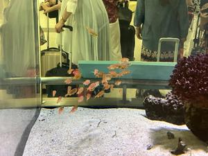
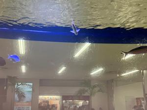
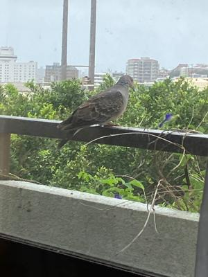

うるがいの話 ある日
最新: 令和５年の台風２号【うるがいの話 ある日】とは 一日だけのプログです
『うるがいの話』の最新一日だけのプログで、通信料が少なく経済的だ。カニの画像をクリックすると全ての日付が載る『うるがいの話』サイトを表示します
|
|
【うるがいの話】 うるがい(ｳﾙｶﾞｲ urugai)とは、『もずくがに』の名前でとても大きくなります。 |
|---|---|
|
|
【カミマヤーの話】 猫のことを方言でマヤーといいます。カミマヤー（kamimayaa）とは、神の猫のことです。 |
|
【たながぁの音楽】 たながぁ（ﾀﾅｶﾞｰ tanagaa）とは手長えびのことで、何種類かあり大きいのは車 エビぐらいになります。 |

|
【ぶながぁの話】 ぶながぁ(ﾌﾞﾅｶﾞｰ bunagaa)とは、赤い髪の毛、赤い身体、そして身長は１ｍ２０ｃｍ ぐらい、川の蟹を食べているの目撃された。場所は沖縄県国頭郡大宜味村のと ある村僕の隣近所に住んでいる爺さんから、聞いた話です。 |
|
|
【ギーマの話】 ギーマ(giima)とは、山原の里山に咲くスズランに似た、 花を付けます。実は食べられます、 気が付くと口の周りが紫になっています。 |
2023年06月01日 (木）令和５年の台風２号
15:56
 
コドモは、当初６月の１３日に海外から帰る予定だったが、持っていったカー
ド２枚がいずれも使えなくなり（一日目で一枚目のカードが、不正利用されて
いる恐れがあるので利用を停止したとのこと、２枚目はラオスのＡＴＭでカー
ドが吸い込まれ使用不可に）、カンボジアからは現金だけで旅を続けていたの
のでタイを最後に、帰ることにしたとのこと。次は４枚持っていくと言ってい
た。帰りが、明日（今日６月１日）だったらアウチだったネと車の中で話す。
アウチと言えば、昨日特定検診だったことも。ただ、今朝、検便検査の容器を
渡されていないことに気付き、病院が開く時間８時半に急いでいく。結局１時
間ほどかかった、病院側の手続きミスだったが。台風２号はそんなに勢力は強
くなさそうであるが、まともに本島に近づきそうである。学校は、昨日で早々
と明日３日の金曜日も休校となっていたが、今日は確かに休校じゃないと危な
い、明日はどうだろうか、気になるところである。
刺された蜂は、ムシヒキアブの仲間だろうと分かるが、個体名まではわからな
かった。
ムシヒキアブは人を刺す？
ムシヒキアブはスズメバチをも獲物にする、暗殺昆虫。
もしそんなムシヒキアブに刺されたら、とっても痛そうですよね。
でも、彼らは自分から積極的に人を襲うことはありませんので安心してくださ
い。
そんな、昆虫を素手で捕まえようとしたオバカな人！がいる。
机から窓を眺めると鳩が、いた
１５時４５分 ビットコインの総資産 ￥１０、８７８（↓１０９）